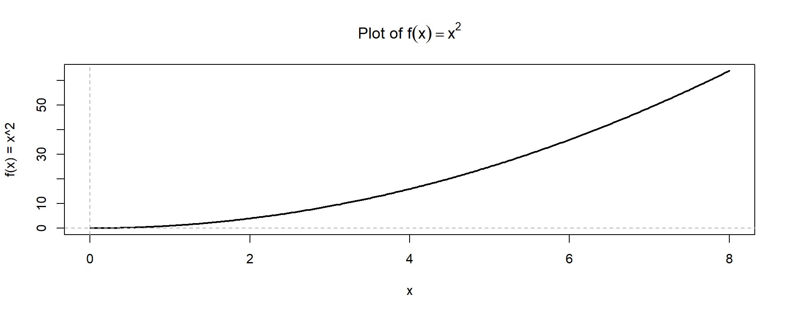

Chapter 10 Week 2 In-Class: Riemann Sums → Derivatives → Antiderivatives
10.1 Trapezoidal Rule
The idea here is approximate the area under the curve using the area of a trapezoid.

Key Idea
We are following the same procedure as we did for Riemann Sums. The key differences
- Need a new expression for the area
The area \(A\) of a trapezoid is given by
\[ A = \frac{1}{2}(b_1 + b_2)h \]
where:
- \(b_1\) and \(b_2\) are the lengths of the two parallel sides (the bases),
- \(h\) is the height, the perpendicular distance between the bases.
What could be replace \(b_1\) and \(b_2\) with?
10.2 Problem: Approximating an Integral with the Trapezoid Rule
Let
\[
f(x) = x^2
\]
on the interval \([1,7]\).

Use the Trapezoid Rule with \(n = 3\) subintervals to approximate \[ \int_{1}^{7} f(x)\,dx. \]
10.2.1 Step 1: Set Up the Riemann Sum Framework
The trapezoid rule is built from a Riemann sum, where the interval \([a,b]\) is divided into \(n\) equal subintervals of width \[ \Delta x = \frac{b-a}{n}. \]
For this problem: \[ \Delta x = \]
10.2.2 Step 2: Identify the \(x_i\) and \(f(x_i)\) Values
The partition points (also called nodes) are defined by \[ x_i = a + i\Delta x, \quad i = 0,1,2,\dots,n. \]
Using \(a=1\) and \(\Delta x=2\): \[ \begin{aligned} x_0 &= \\ x_1 &= \\ x_2 &= \\ x_3 &= \end{aligned} \]
These \(x_i\) values mark the endpoints of each trapezoid.
10.2.3 Step 3: Trapezoid Rule as a Riemann Sum
The trapezoid rule can be written as a weighted Riemann sum: \[ T_n = \frac{\Delta x}{2} \left[ f(x_0) + 2f(x_1) + 2f(x_2) + \cdots + 2f(x_{n-1}) + f(x_n) \right]. \]
Important observations:
- The first and last function values are counted once
- All interior function values are counted twice
10.2.4 Step 4: Why This Formula Represents Trapezoids
On each subinterval \([x_{i-1}, x_i]\), the area is approximated by a trapezoid with:
- Base width: \(\Delta x\)
- Parallel sides: \(f(x_{i-1})\) and \(f(x_i)\)
The area of a single trapezoid is \[ \text{Area}_i = \frac{1}{2}\left[f(x_{i-1}) + f(x_i)\right]\Delta x. \]
Summing the areas of all trapezoids gives \[ \sum_{i=1}^{n} \frac{1}{2}\left[f(x_{i-1}) + f(x_i)\right]\Delta x, \] which simplifies to the trapezoid rule formula above.
10.3 Definite Integrals and the Fundamental Theorem of Calculus
In the previous chapter, you developed an intuition for accumulation by approximating totals from rates using rectangles, tables, and graphs. You saw how adding up many small contributions can represent meaningful environmental quantities such as total rainfall, streamflow, carbon exchange, or pollutant transport. You also encountered the idea of signed accumulation, where gains and losses can offset each other over time.
This chapter formalizes those ideas.
Here, we move from “adding rectangles makes sense” to “integrals are well-defined mathematical objects with powerful and reliable properties.” You will learn how mathematicians define accumulation precisely, why different approximation methods converge to the same value, and how integrals connect directly back to derivatives through one of the most important results in calculus.
Rather than treating integrals as a new collection of formulas, this chapter emphasizes meaning first. Computation matters, but it is grounded in interpretation: what a definite integral represents, how it behaves, and why it works.
By the end of this chapter, you should clearly understand:
- what a definite integral is and how it arises from limits of Riemann sums
- why a definite integral represents accumulation, not just area
- how integration and differentiation are connected
- how to compute definite integrals efficiently without losing meaning
10.4 From Riemann Sums to Definite Integrals
In the previous chapter, you learned how to approximate accumulation by adding up rectangles under a rate curve. These approximations—left, right, midpoint, and trapezoidal—allowed you to estimate totals from discrete measurements and to reason carefully about overestimates, underestimates, and conservativeness.
In this section, we take the next conceptual step:
Riemann sums are a process.
The definite integral is the result of that process.
10.4.1 Riemann Sums as Structured Approximations
A Riemann sum is a structured way to approximate accumulation:
- Partition an interval \([a,b]\)
- Choose a representative rate in each slice
- Multiply rate by width
- Add all contributions
This mirrors how environmental data are handled in practice: discrete measurements represent continuous processes.
10.4.2 From Finite Sums to a Limit
A Riemann sum has the form: \[ \sum_{i=1}^n f(x_i^*)\Delta x \]
As \(n \to \infty\), rectangles become thinner and approximation error shrinks.
10.5 Evaluating a Definite Integral (Step by Step)
Before learning shortcut rules for integrals, it is essential to practice the core process used to evaluate a definite integral. This section will guide you through that process one step at a time, with checkpoints to help you reflect on what each step means.
10.5.1 What does a definite integral represent?
A definite integral, \[ \int_a^b f(x)\,dx, \] represents the net accumulation of a quantity whose rate or density is given by \(f(x)\) over the interval \([a,b]\).
10.5.2 Step 1: Identify the function being accumulated
Consider the integral: \[ \int_1^4 x^2\,dx. \]
Checkpoint 1
What is the function being accumulated?
Over what interval does the accumulation occur?
Function: __________________________
Interval: __________________________
10.5.3 Step 2: Find an antiderivative
To evaluate a definite integral, you first need an antiderivative.
An antiderivative of \(f(x)\) is a function \(F(x)\) such that
\[ F'(x) = f(x). \]
Practice
Find an antiderivative of: \[ f(x) = x^2 \]
\[ F(x) = \rule{6cm}{0.15mm} \]
(Do not include a constant of integration.)
10.5.4 Step 3: Evaluate the antiderivative at the bounds
Next, evaluate your antiderivative at the upper bound and the lower bound.
Upper bound:
\[ F(4) = \rule{6cm}{0.15mm} \]
Lower bound:
\[ F(1) = \rule{6cm}{0.15mm} \]
10.5.5 Step 4: Subtract to find the net accumulation
The value of the definite integral is found by subtracting: \[ \int_1^4 x^2\,dx = F(4) - F(1). \]
Compute the difference:
\[ F(4) - F(1) = \rule{6cm}{0.15mm} \]
10.5.6 Step 5: Interpret the result
Your final answer represents the total accumulated amount of \(x^2\) from \(x=1\) to \(x=4\).
Reflection questions
- Is your result positive or negative? Why does that make sense?
- Would your answer change if you added a constant \(C\) to the antiderivative? Why or why not?
\[ \rule{12cm}{0.15mm} \]
10.6 Why there is no constant of integration
Suppose your antiderivative had included a constant \(C\): \[ F(x) + C. \]
When evaluating the definite integral, you would compute: \[ (F(4) + C) - (F(1) + C). \]
Checkpoint 2
- What happens to the constant \(C\)?
- What does this tell you about definite integrals?
\[ \rule{12cm}{0.15mm} \]
10.7 Summary: The Evaluation Process
Every definite integral is evaluated using the same three-step process:
- Find an antiderivative
- Evaluate it at the upper and lower bounds
- Subtract to find net accumulation
10.8 Properties of Definite Integrals
10.8.1 Linearity
\[ \int_a^b [f(x)+g(x)]dx = \int_a^b f(x)dx + \int_a^b g(x)dx \]
\[ \int_a^b c f(x)\,dx = c\int_a^b f(x)\,dx \]
Linearity reflects additive physical processes.
10.9 The Fundamental Theorem of Calculus (Part I)
Define an accumulation function: \[ A(x) = \int_a^x f(t)\,dt \]
Then: \[ A'(x) = f(x) \]
The rate of change of accumulation equals the original rate.
10.10 The Fundamental Theorem of Calculus (Part II)
If \(F'(x)=f(x)\), then: \[ \int_a^b f(x)\,dx = F(b) - F(a) \]
This works because accumulation functions are antiderivatives.
Worked Example
Suppose carbon flux is modeled by: \[ f(t)=3t^2 + 7 \quad \text{(kg/hr)} \]
Find net carbon exchange from \(t=1\) to \(t=4\).
Antiderivative:
Evaluate: